vigildesk · one-question answers
一条只回答一个问题
这 15 条，每一条只解决一个疑问，标题就是你会去搜的那句话。不铺开讲体系，不写工程报告。
素材全部来自我们自己的真实事故——配错的日损上限、被静默跳过的不止损、被日常波动扫掉的窄止损。数字都标注了口径和样本量，站不住的地方我们直接写「这是待确认的假设」。
我们只讲风控，不讲盈利：这里没有收益曲线，也没有任何关于结果的承诺。
第 1 问
重启之后，追踪止损为什么会静默失效？
先说结论：不是止损被改坏了，是重启之后它再也不会启动了——而且是永久性的。
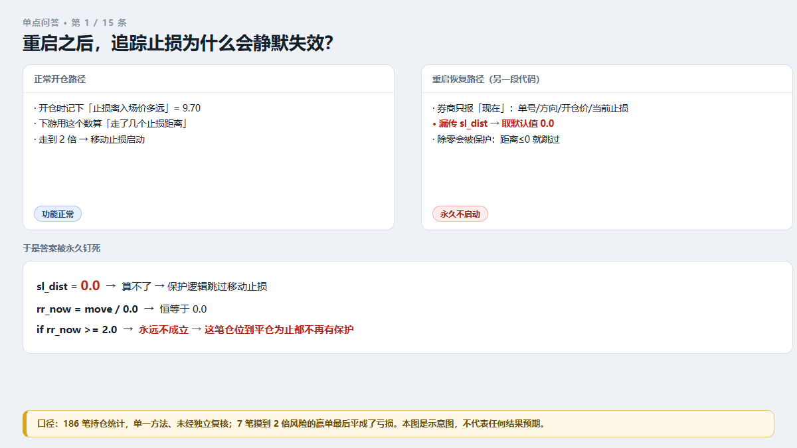
图 1：重启之后，追踪止损为什么会静默失效？
追踪止损（也叫移动止损）是一只自己往前挪的安全带。普通止损是固定的；追踪止损会跟着价格往有利方向走。它要做的动作只有一个：盈利够多了，就把止损线往前挪一格。
我们的系统里，这个动作的启动条件是"浮盈超过 15 美元，并且价格已经走到入场价的 2 倍止损距离之外"。判断"离入场价几个止损距离"，要用到一个数：开仓时止损离入场价有多远。
问题出在重启恢复这条路径上。程序重启后，要去券商那里把还在手上的仓位接回来继续管。券商会告诉你：单号、方向、开仓价、开仓时间、现在止损在哪——但它不会告诉你"当初开仓时止损离入场价多远"，它只知道现在止损在哪。
于是这个字段没被传进去，取到了默认值 0。
接下来是最关键的一步。下游代码遇到 0 会除零崩溃，所以 2026-09-10 有人（正确地）加了一句保护：距离是 0 或负数，就跳过追踪止损。 这句话保住了进程，也把答案永久钉死成"否"——因为没有任何代码会回头把这个数补上。
所以：只要你是在持有仓位的时候重启过一次，这笔仓位的追踪止损，到平仓为止都不会再工作。
它的代价（我们自己 186 笔持仓的统计，单一方法、未经独立复核）：7 笔已经摸到 2 倍风险的赢单，最后平成了亏损；更普遍的是，摸到 2 倍风险的赢单会一路回吐到只剩 1.03 倍。
日志为什么干净？因为代码只在"改变止损位"的时候才打印。一笔从没启动过追踪止损的仓位，永远不打印任何东西。
这条属于我们的「单点问答」栏目：一条只回答一个问题，讲的都是我们自己踩过的坑。想看别的，去我们自家站搜「VigilDesk 单点问答」。
风险提示：本文是我们自己工程事故的复盘。数字来自单个真实模拟账户与项目代码静态检查，样本小、周期短，不构成投资建议，不能用于推测未来表现。风控工具只能限制单次亏损范围，无法阻止亏损发生，也无法提高盈利概率。
第 2 问
我设了日损上限，为什么它自己失效了？
先说结论：因为"配置里写了"和"程序里在跑"可以是两个不同的数字，而且不一样的时候通常不报错。
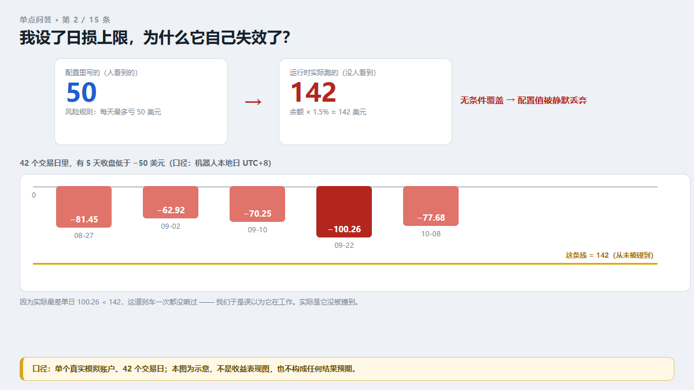
图 2：我设了日损上限，为什么它自己失效了？
我们在风险规则文件里写了一条：每天最多亏 50 美元。写进去了，保存了，看起来一切正常。
但程序启动时是这么干的：自己算一个数——账户余额 × 1.5%；按当时的余额算出来约 142 美元；然后无条件覆盖掉规则里写的 50。
于是"每天最多亏 50"变成了"每天最多亏 142"。没有任何报错日志，没有警告，没有弹窗。 规则文件里那行 50 还在，谁去看都显示 50。
为什么很久没人发现？因为当天真的亏到 142 的概率太低了。我们那段时间单日最大亏损是 100.26 美元，100.26 < 142，所以这道刹车一次都没响过。于是我们产生了一种错觉："日损帽在正常工作。"
它没有工作。它只是没被撞到。
怎么发现的？线索是规则命中次数。每条风控规则被触发时都会记一次数。翻统计时我们看到：这条规则的命中次数是 0。一条在 42 个交易日里天天盯着账户的规则，命中 0 次——这本身就很可疑。顺着这条线去读代码，才看到那段注释。
真实的天数：42 个交易日里，有 5 天收盘低于 −50 美元（口径：机器人本地日 UTC+8）——−81.45、−62.92、−70.25、−100.26（最差）、−77.68。
修法只有两行，思路值得说清楚：把"上限 = 余额 × 1.5%"改成"上限 = min(余额 × 1.5%, 规则里的值)"——取更保守的那个。原则是：一个安全参数，要么和配置一致，要么比它更严，永远不允许悄悄变宽松。
这篇是「单点问答」里的一条，一条只回答一个疑问，素材全来自我们自己的真实事故。想看同类的，去我们自家站搜「VigilDesk 单点问答」。
风险提示：本文是我们自己工程事故的复盘。数字来自单个真实模拟账户与项目代码静态检查，样本小、周期短，不构成投资建议，不能用于推测未来表现。风控工具只能限制单次亏损范围，无法阻止亏损发生，也无法提高盈利概率。
第 3 问
止损设得太窄，为什么会被正常波动扫掉？
先说结论：很多时候你不是被"反方向走了一大波"打败的，是被市场的日常呼吸打败的。
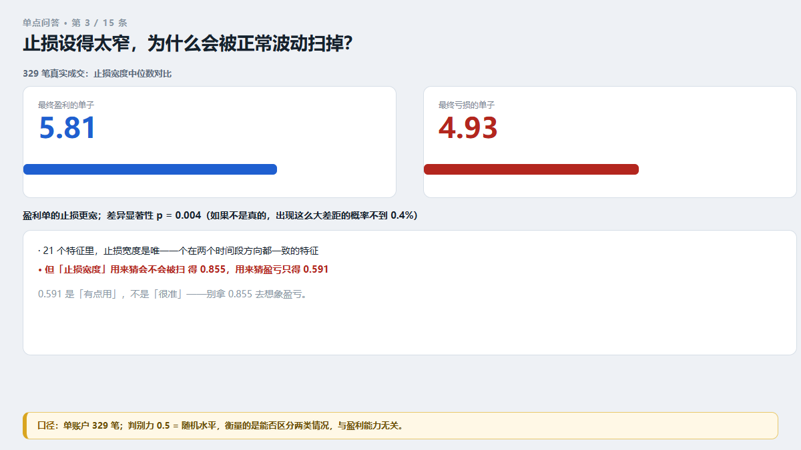
图 3：止损设得太窄，为什么会被正常波动扫掉？
打个比方：你在火车站排队，怕丢东西，把绳子系在手腕上——但绳子只留了 30 厘米。旁边的人只是正常地挪了一步、转了个身，绳子就扯脱了。他没抢你东西，甚至没注意你。是你的绳子太短。
我们拿自己 329 笔真实成交做了一个很朴素的对比："这笔单最后赚了还是亏了"和"这笔单的止损放得多宽"，有没有关系？
结果（止损宽度中位数）：
- 最终盈利的单子：5.81 美元
- 最终亏损的单子：4.93 美元
盈利单的止损放得更宽。 差异的统计显著性 p = 0.004——如果止损宽度和赚亏完全没关系，出现这么大差异的概率不到 0.4%。
（严谨起见：我们在 21 个特征里横向比过，止损宽度是唯一一个在两个不同时间段里方向都一致的特征。）
再看"被扫掉"有多频繁：开仓后 5 分钟内就被止损扫出去的有 112~114 笔（两个数字的差异来自台账时间基准，不影响结论）。329 笔里，大约每 3 笔就有 1 笔活不过 5 分钟。
⚠️ 有一句话必须说清楚，否则很容易被误读：我们测过，"止损宽度"用来猜会不会被扫掉，得分 0.855；用来猜盈亏，得分只有 0.591。
别拿前一个数字去想象盈利。 上面那组 5.81 / 4.93 说的是"亏损单的止损更窄"，不是"止损放宽就能赚钱"。
「单点问答」是我们的一个栏目：一条只回答一个问题。想看别的，去我们自家站搜「VigilDesk 单点问答」。
风险提示：本文是我们自己工程事故的复盘。数字来自单个真实模拟账户与项目代码静态检查，样本小、周期短，不构成投资建议，不能用于推测未来表现。风控工具只能限制单次亏损范围，无法阻止亏损发生，也无法提高盈利概率。
第 4 问
为什么"反弹就补仓"是最贵的一个动作？
先说结论：因为它把"一次有边界的小亏"，改写成了"一次没有边界的亏"。
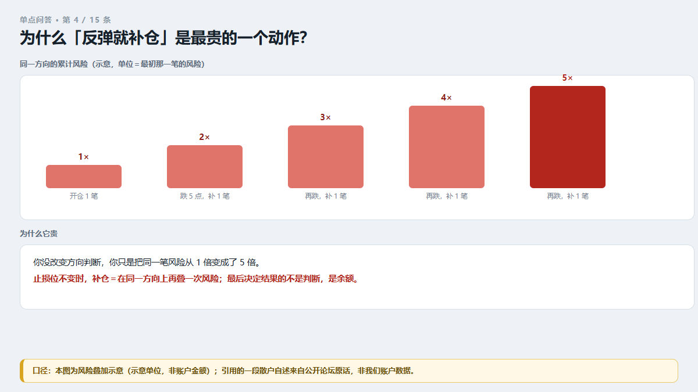
图 4：为什么"反弹就补仓"是最贵的一个动作？
补仓本身不是错。错在亏损之后、因为想摊平成本而补——这时候你做的动作是：在同一方向上，把风险再叠加一次。
算一笔最朴素的账：你开了一笔单，止损距离 10 个点，1 手，这笔单的最大亏损就是 10 个点。价格跌了 5 个点，你补 1 手，还守着原来那个止损位——那么止损一旦被打掉，你的实际亏损变成 15 个点，不是 10 个点。你没有改变方向判断，你只是把同一笔风险放大了一倍半。
而市场最喜欢的行情，恰恰是那种"先反弹一下让你确认补仓成功、然后继续原方向"的走法。
社区里有人把自己的经历原样写下来了。一位散户在论坛里写道（原文照录）：买在 48，"以为到底了"；跌到 35，"以为是铁底了，又补仓一倍"；24，"以为不会再新低了，再补仓一倍"；16，"以为跌到地狱了，再补仓一倍"；到 10.78 的时候，"没有钱了，不敢补了"。
四次补仓，每一次的理由都成立，每一次的结果都是风险再翻一倍。到最后一格，决定他命运的已经不是判断，而是余额。
我们自己账上也有一笔手动单，亏损额是机器人最差单笔（−53.99 美元）的四倍多——那笔不是机器人下的。
风控上的正确做法只有一句：不要只给"每一笔"设上限，要给"同一方向的总风险"设上限。 补仓之后，同方向的持仓必须重新算一次总风险，超过上限就拒绝。
这条属于我们的「单点问答」栏目：一条只回答一个问题，讲的都是我们自己踩过的坑。想看别的，去我们自家站搜「VigilDesk 单点问答」。
风险提示：本文是我们自己工程事故的复盘。数字来自单个真实模拟账户与项目代码静态检查，样本小、周期短，不构成投资建议，不能用于推测未来表现。风控工具只能限制单次亏损范围，无法阻止亏损发生，也无法提高盈利概率。
第 5 问
交易软件重启后，哪些设置会悄悄回到默认值？
先说结论：所有"只靠内存记着"的东西。 程序重建持仓对象时，每一个字段都是一次丢字段的机会。
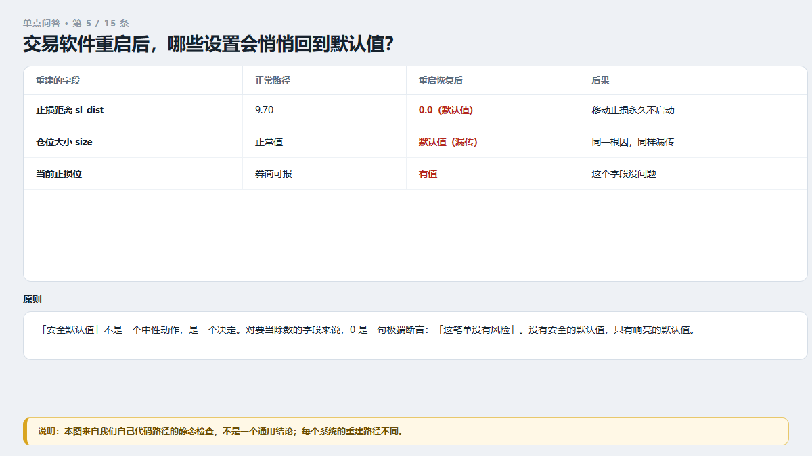
图 5：交易软件重启后，哪些设置会悄悄回到默认值？
我们踩的那个坑很典型。程序重启后，要把还在手上的仓位接回来继续管。接回来的时候它做了一件事：重新构造一遍这个仓位对象。问题是，券商那里只有"现在的事实"——单号、方向、开仓价、开仓时间、当前止损在哪。
券商不知道"当初开仓时止损离入场价多远"，也不知道"当初这笔单准备亏多少钱"。这两个数只存在我们自己的记忆里。
结果：
- "止损距离"漏传 → 取到默认值 0 → 追踪止损永久失效
- "仓位大小"同样漏传 → 也取到默认值
一条原则值得记住："安全默认值"不是一个中性动作，它是一个决定。 对一个要当除数的字段来说，0 不是"没有信息"，而是一句极端的断言——"这笔单没有风险"。这里没有安全的默认值，只有响亮的默认值。如果真不知道，诚实的选项只有两个：拒绝接管这笔仓位并大声说出来，或者去台账里查回来。
我们最后用的是第二个：重启恢复时，拿票号去自己的成交台账里把原始止损距离查回来；查不到，才退回旧的保守行为（保持跳过）。同时把漏掉的"仓位大小"一起补上了。
给你一个 30 秒能做的自检：持有一笔仓位的时候重启你的程序，然后看日志里有没有打印这笔仓位的关键字段（止损距离、开仓价、当前止损位）。
哪个字段是 0 或者是空的，管着它的那个功能，现在就是死的。
这篇是「单点问答」里的一条，一条只回答一个疑问，素材全来自我们自己的真实事故。想看同类的，去我们自家站搜「VigilDesk 单点问答」。
风险提示：本文是我们自己工程事故的复盘。数字来自单个真实模拟账户与项目代码静态检查，样本小、周期短，不构成投资建议，不能用于推测未来表现。风控工具只能限制单次亏损范围，无法阻止亏损发生，也无法提高盈利概率。
第 6 问
同一个参数写在两个地方，到底谁说了算？
先说结论：运行时读到的那个说了算——而且它通常不告诉你它读的是哪个。
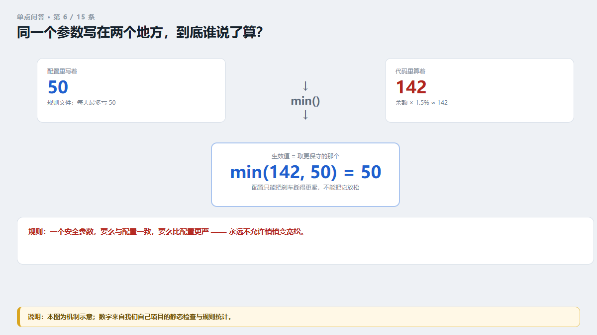
图 6：同一个参数写在两个地方，到底谁说了算？
我们的具体情形是：风险规则文件里写着"每天最多亏 50 美元"；程序启动时自己算"余额 × 1.5%" ≈ 142 美元，然后无条件覆盖掉规则值。两个地方都"有值"，两个值不一样；配置文件里那行 50 还在，谁去看都显示 50。
这不是"配置丢了"，也不是"读错了文件"。是代码里有一段逻辑，明确地、有意图地把配置值丢掉了。而且它不觉得这是异常——覆盖动作被当成"正常逻辑"，所以不产生任何错误记录。
那怎么办？我们最后立的规矩只有一条：
一个安全参数，要么与配置一致，要么比配置更严。永远不允许悄悄变宽松。
落到代码上就是取更保守的那个：上限 = min(余额 × 1.5%, 规则里的值)。这样即使以后有人调了余额比例，配置里的 50 依然是天花板——配置只能把刹车踩得更紧，不能把它放松。
再加一条同样重要的：启动时把生效值打印出来。 注意，不是打印配置值，是打印程序实际读到的那个数。看不到它打印，就当它没生效。
值得说清楚的是：这类问题的危险不在"错"，而在"看不出来错"。配置对、日志干净、程序不报错——三个指示灯全是绿的，只有真实成交记录能证明它到底跑的是哪个数。
「单点问答」是我们的一个栏目：一条只回答一个问题。想看别的，去我们自家站搜「VigilDesk 单点问答」。
风险提示：本文是我们自己工程事故的复盘。数字来自单个真实模拟账户与项目代码静态检查，样本小、周期短，不构成投资建议，不能用于推测未来表现。风控工具只能限制单次亏损范围，无法阻止亏损发生，也无法提高盈利概率。
第 7 问
一条风控规则命中 0 次，是好事还是坏事？
先说结论：先当成线索去查，别当成好消息。
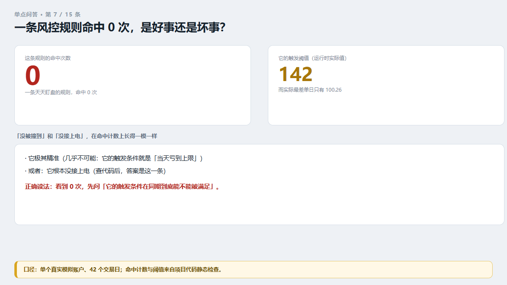
图 7：一条风控规则命中 0 次，是好事还是坏事？
我们的风控规则每条都有命中计数。翻统计的时候，我们看到一条规则的命中次数是 0——不是"很少"，是零。这条规则是"每天亏损上限"，它本该在 42 个交易日里天天盯着账户。
一条天天盯盘的规则命中 0 次，只有两种可能：
- 它极其精准（几乎不可能，因为它的触发条件就是"当天亏到上限"）；
- 它根本没接上电。
顺着这条线去读代码，答案是第 2 种：配置里写的上限是 50 美元，运行时的实际上限被覆盖成了约 142 美元；而我们那段时间单日最大亏损是 100.26 美元——100.26 < 142，所以它一次都没响过。
这里的教训比 bug 本身更值钱："没被撞到"和"没接上电"，在命中计数上长得一模一样。
所以正确的读法不是"命中 0 次 = 没触发过 = 正常"，而是：
看到命中 0 次，就跟一个问题：它的触发条件，在过去这段时间里到底能不能被满足？
具体做法：先算一遍它的触发阈值，再拿真实成交记录对一遍——有没有哪一天、哪一笔，真的越过了那条线。 如果越过过，而它命中还是 0，那它就是死的。
我们就是靠这一步发现：问"有没有哪天的亏损超过 50 美元"，答案是有 5 天。
这条属于我们的「单点问答」栏目：一条只回答一个问题，讲的都是我们自己踩过的坑。想看别的，去我们自家站搜「VigilDesk 单点问答」。
风险提示：本文是我们自己工程事故的复盘。数字来自单个真实模拟账户与项目代码静态检查，样本小、周期短，不构成投资建议，不能用于推测未来表现。风控工具只能限制单次亏损范围，无法阻止亏损发生，也无法提高盈利概率。
第 8 问
为什么"没报错"不等于"风控在正常工作"？
先说结论：因为日志干净，既是健康系统的默认状态，也是死系统的默认状态。
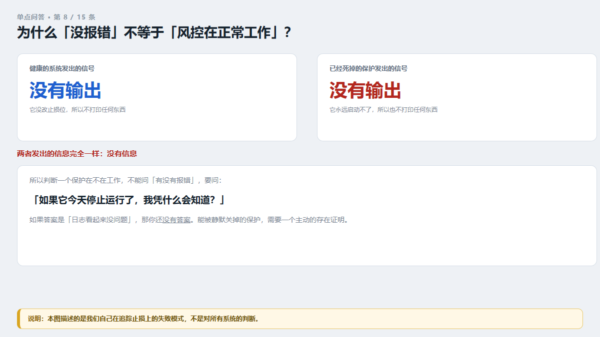
图 8：为什么"没报错"不等于"风控在正常工作"？
我们的追踪止损出事那次，有人问：日志里没有报错，怎么可能是坏的？
问题在于，这个功能的代码只在"改变了止损位"的时候才打印一行。一笔从没启动过追踪止损的仓位，永远不打印任何东西。而它为什么启动不了，原因恰恰是一句为了"更稳健"而加的保护：距离这个数是 0 或负数，就跳过。
看明白这个结构了吗——"跳过"是当初特意加的、被认为是正确的行为。程序不觉得自己做错了，自然不报错。
这就是最贵的一类失败模式：它和正常状态发出的信息完全一样——没有信息。
所以判断一个保护到底在不在工作，不能问"有没有报错"，要问：
如果它今天停止运行了，我凭什么会知道？
如果答案是"日志看起来没问题"，那你还没有答案。
我们后来给每个上限、每个熔断、每条规则都加了命中计数。理由很直接：能被静默关掉的保护，需要一个主动的存在证明。 一条保护在几十笔交易里命中 0 次，那就不是"安静"，那是一个发现。
顺带说一句：当初"修"这个 bug 的方式本身也值得警惕——加保护的时候，把异常换成了安静的成功。而那个异常，是唯一在告诉别人"这个情况存在"的东西。
这篇是「单点问答」里的一条，一条只回答一个疑问，素材全来自我们自己的真实事故。想看同类的，去我们自家站搜「VigilDesk 单点问答」。
风险提示：本文是我们自己工程事故的复盘。数字来自单个真实模拟账户与项目代码静态检查，样本小、周期短，不构成投资建议，不能用于推测未来表现。风控工具只能限制单次亏损范围，无法阻止亏损发生，也无法提高盈利概率。
第 9 问
止损宽度和盈亏到底有没有关系？
先说结论：有，但有用的地方和我们一开始以为的不一样——不是"猜方向"，是"止损放多宽"。
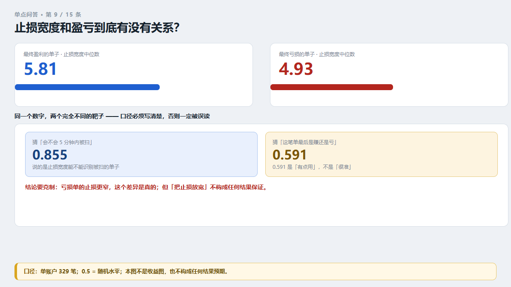
图 9：止损宽度和盈亏到底有没有关系？
我们拿自己 329 笔真实成交做了一次很朴素的对比：把成交分成"最终盈利"和"最终亏损"两组，看两组止损宽度（开仓时止损离入场价的距离）的中位数：
- 最终盈利的单子：5.81 美元
- 最终亏损的单子：4.93 美元
盈利单的止损更宽。 统计显著性 p = 0.004：如果止损宽度和赚亏完全没关系，出现这么大差异的概率不到 0.4%。
我们在 21 个特征里横向比过，止损宽度是唯一一个在两个不同时间段里方向都一致的特征——其他"看着有用"的特征，换个时间段就翻脸。
但口径必须说清楚，否则很容易被误读：
- 用"止损宽度"去猜这笔单会不会在 5 分钟内被扫掉，得分 0.855；
- 用同一个数字去猜这笔单最后是赚还是亏，得分只有 0.591。
0.591 是"有点用"，不是"很准"。 前面那个 0.855 说的是"能不能猜出它会被扫"，不是"能不能猜出它会赚钱"。
顺便说我们试过的经典技术指标：用来判断方向的判别力是 0.487~0.496——低于 0.50，等于瞎猜，甚至比瞎猜还差。
所以这条想说的是一句很克制的话："亏损单的止损更窄"这个差异是真的；但"把止损放宽"不构成任何结果上的保证。 它只是让你少被日常波动扫出去几次。
「单点问答」是我们的一个栏目：一条只回答一个问题。想看别的，去我们自家站搜「VigilDesk 单点问答」。
风险提示：本文是我们自己工程事故的复盘。数字来自单个真实模拟账户与项目代码静态检查，样本小、周期短，不构成投资建议，不能用于推测未来表现。风控工具只能限制单次亏损范围，无法阻止亏损发生，也无法提高盈利概率。
第 10 问
为什么我的单子活不过 5 分钟？
先说结论：大约每 3 笔就有 1 笔，是开仓后 5 分钟内被止损扫出去的。
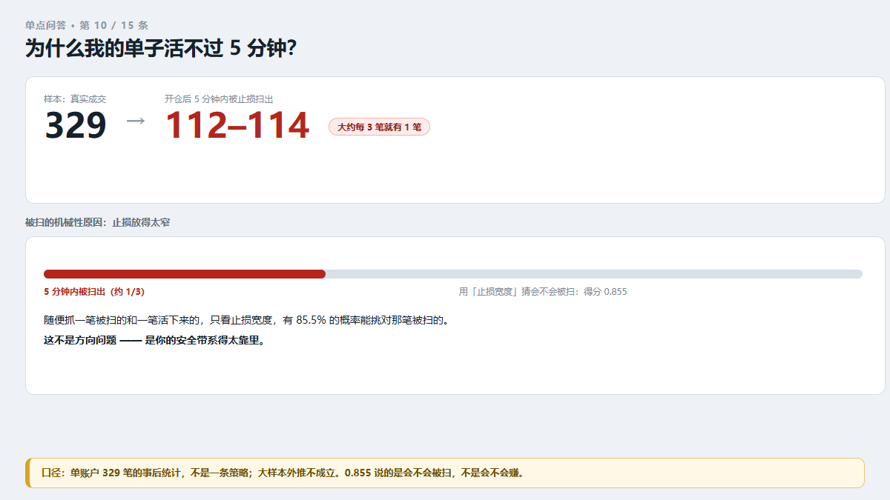
图 10：为什么我的单子活不过 5 分钟？
我们统计了自己 329 笔真实成交：112~114 笔在开仓后 5 分钟内就被止损扫掉（两个数字的差异来自台账时间基准，不影响结论）。
这批单子的合计是净亏约 575 美元；而持有超过 5 分钟的那批单子，合计是 +736 美元。
"5 分钟"这条线，把赚钱的和亏钱的分得清清楚楚。
请注意这句话的口径——这是一次事后统计，不是一条交易策略。 它说的是"在这批样本里，活过 5 分钟的单子和活不过的单子，合计数一个正一个负"，不是"所有活过 5 分钟的单子都会赚"。样本只有一个账户、329 笔，不能外推。
那这些单子为什么活不过 5 分钟？数据指向一个很机械的原因：止损放得太窄。 用"止损宽度"这一个数字去猜"这笔单会不会在 5 分钟内被扫"，得分 0.855——随便抓一笔被扫的和一笔活下来的，只看止损宽度，有 85.5% 的概率能挑对那笔被扫的。
这几乎是一根绳子在喊："看我看我，是我太短了。"
所以下一次你的单子"莫名其妙"被扫，先别急着骂行情。先量一个数：你的止损距离，比市场平常的抖动大多少？ 如果它小于日常波动，那它不是止损，是给市场送手续费。
（提醒一句：0.855 测的是"会不会被扫"，不是"会不会赚钱"；同一个数字用来测盈亏只有 0.591。）
这条属于我们的「单点问答」栏目：一条只回答一个问题，讲的都是我们自己踩过的坑。想看别的，去我们自家站搜「VigilDesk 单点问答」。
风险提示：本文是我们自己工程事故的复盘。数字来自单个真实模拟账户与项目代码静态检查，样本小、周期短，不构成投资建议，不能用于推测未来表现。风控工具只能限制单次亏损范围，无法阻止亏损发生，也无法提高盈利概率。
第 11 问
明明定了止损下限，为什么实际还是被破？
先说结论：因为"定了规则"和"守住了规则"是两件事，而我们只做了前一件。
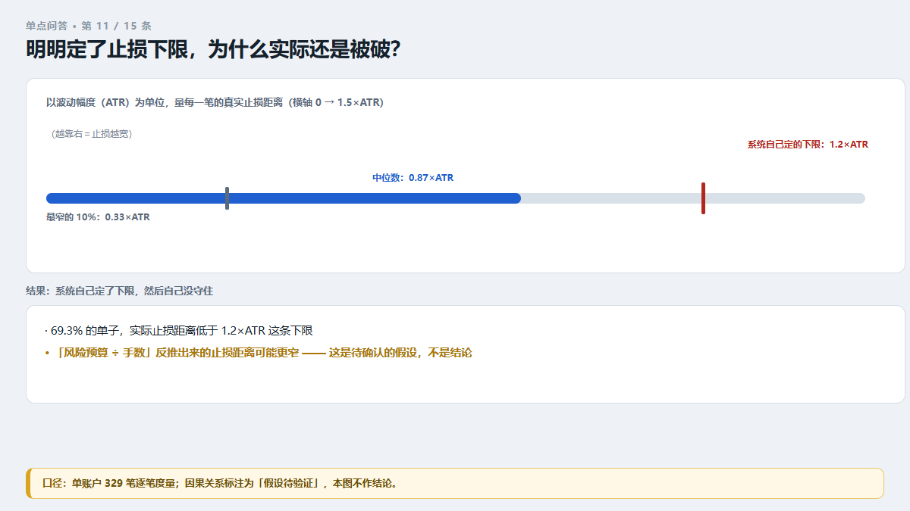
图 11：明明定了止损下限，为什么实际还是被破？
我们的系统里有一条明确的下限：止损距离不得低于波动幅度（ATR）的 1.2 倍。也就是说，系统自己知道"太窄了不行"。
但真实成交记录显示：
- 69.3% 的单子，实际止损距离低于这条下限；
- 中位数只有 0.87 倍 ATR；
- 最窄的那 10%，只有 0.33 倍 ATR。
系统自己定了下限，然后自己没守住。
是怎么破的？止损距离不是直接写死的，它是被算出来的："这笔单最多亏多少钱"的风险预算 ÷ 手数 = 允许的止损距离。这个反推出来的距离，可能比 1.2 倍 ATR 还窄——而链条上的某个环节让它通过了，于是"下限"变成一句空话。
⚠️ 这里的因果关系我标清楚：这是待确认的假设，不是结论。 我们能确认的是"69.3% 破了下限"这个事实，以及"止损太窄会被日常波动扫掉"这个统计关系；"风险预算反推把下限挤破了"是对这条链路的推断，还没做单点验证。
那能直接用的动作只有一个：去你的成交记录里，量出每一笔的真实止损距离，看你定的那条下限被破了多少笔。
不要去看"规则文件里写了什么"——那只能证明你想过这件事；只有逐笔成交记录能证明它到底守住了没有。
这篇是「单点问答」里的一条，一条只回答一个疑问，素材全来自我们自己的真实事故。想看同类的，去我们自家站搜「VigilDesk 单点问答」。
风险提示：本文是我们自己工程事故的复盘。数字来自单个真实模拟账户与项目代码静态检查，样本小、周期短，不构成投资建议，不能用于推测未来表现。风控工具只能限制单次亏损范围，无法阻止亏损发生，也无法提高盈利概率。
第 12 问
入场点到底重不重要？
先说结论：在我们自己的数据里，"买在哪"基本不影响结果；"亏多少"影响结果。
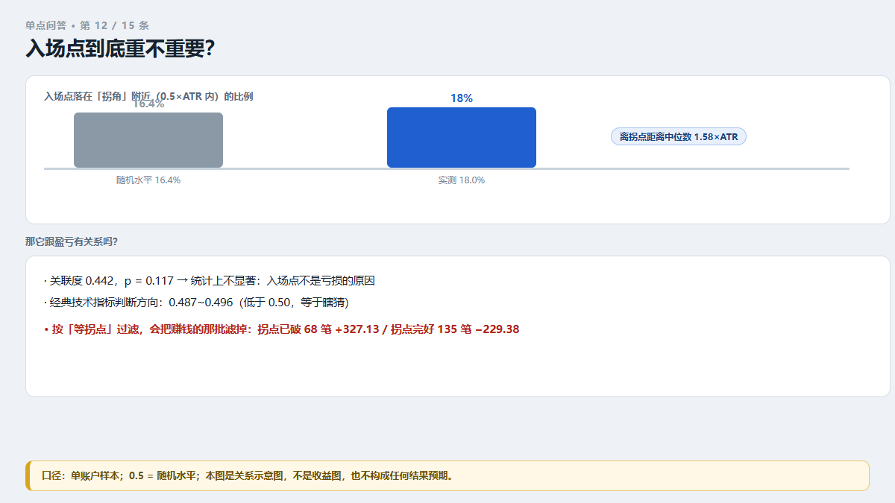
图 12：入场点到底重不重要？
我们花了很长时间试"怎么进场更准"，结果三次独立分析给出同一件事：用经典技术指标判断方向，判别力 0.487~0.496——低于 0.50，等于瞎猜。
（0.50 就是抛硬币。低于 0.50 意味着比抛硬币还差。）
然后我们换了一个更贴近人的问法：入场点离最近的拐点有多远，跟这笔单最后赚亏有没有关系？
- 关联度 0.442，p = 0.117，统计上不显著；
- 换句话说：入场点不是亏损的原因。
顺便说，我们发现一个观察是对的：大部分入场确实发生在行情中间。 入场点离最近拐点的距离，中位数是 1.58 倍 ATR，只有 18.0% 的单子落在 0.5 倍 ATR 以内的"拐角"附近（随机水平是 16.4%）。
但它不构成亏损的解释。而且我们试过一个很自然的想法——"等拐点到了再进"，结果是：拐点已破的那 68 笔合计 +327.13；拐点完好的那 135 笔合计 −229.38。 按"等拐点"过滤，会把赚钱的那批滤掉。
所以结论是：把精力从"猜方向"转到"管亏损"上。 方向往哪走不归我们管，亏多少是我们唯一能控制的东西。
「单点问答」是我们的一个栏目：一条只回答一个问题。想看别的，去我们自家站搜「VigilDesk 单点问答」。
风险提示：本文是我们自己工程事故的复盘。数字来自单个真实模拟账户与项目代码静态检查，样本小、周期短，不构成投资建议，不能用于推测未来表现。风控工具只能限制单次亏损范围，无法阻止亏损发生，也无法提高盈利概率。
第 13 问
每天最多亏多少钱，这个数字该怎么定？
先说结论：用你自己的钱定，别用心情定。
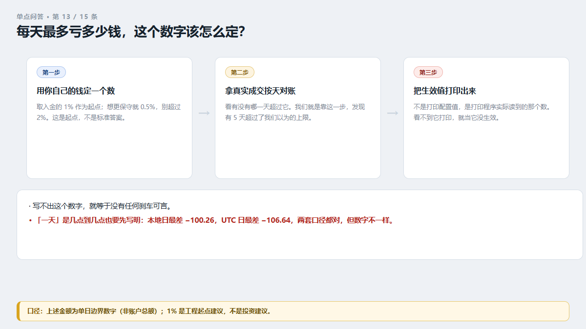
图 13：每天最多亏多少钱，这个数字该怎么定？
这是整件事里最重要、也最容易被跳过的一步。因为如果你写不出这个数字，你就没有任何刹车可言。
怎么写： 打开你的入金金额，取它的 1%。比如入了 20,000 美元，那就是 200 美元。
为什么是 1%： 这只是个起点，不是标准答案。它的好处是用你自己的钱来定，而不是用"我今天感觉能扛多少"。想更保守就取 0.5%，别超过 2%。
写下来之后，去做一件更关键的事：
拿你最近的真实成交记录，按"天"汇总一遍，看看有没有哪一天超过了这个数字。
我们就是做了这一步，才发现有 5 天超过了我们以为的上限（最差的一天 −100.26 美元）。如果你不去对账，你永远不会知道自己的刹车是真在工作，还是根本没接上电。
⚠️ 两个真坑，都是我们自己的：
- "配置里写了"不等于"程序里在跑"。 我们配置里写 50，代码里实际是余额 × 1.5% ≈ 142。这两个数字可以不一样，而且不一样的时候通常不报错。所以写完这个数字之后，必须在日志里把它打印出来，确认程序读到的就是你写的那个。
- "一天"是几点到几点，要先说清楚。 我们的风险日用的是本地日（UTC+8）。换一个日界，同样的成交记录会算出不同的"最差单日"——我们这批数据里，本地日口径最差 −100.26，UTC 日口径最差 −106.64。引用任何"单日"数字前，先写明是哪套日界。
这条属于我们的「单点问答」栏目：一条只回答一个问题，讲的都是我们自己踩过的坑。想看别的，去我们自家站搜「VigilDesk 单点问答」。
风险提示：本文是我们自己工程事故的复盘。数字来自单个真实模拟账户与项目代码静态检查，样本小、周期短，不构成投资建议，不能用于推测未来表现。风控工具只能限制单次亏损范围，无法阻止亏损发生，也无法提高盈利概率。
第 14 问
风控规则上线了，为什么还有单子能绕过去？
先说结论：因为一条风控门通常只管一条下单路径，而你的系统不止一条。
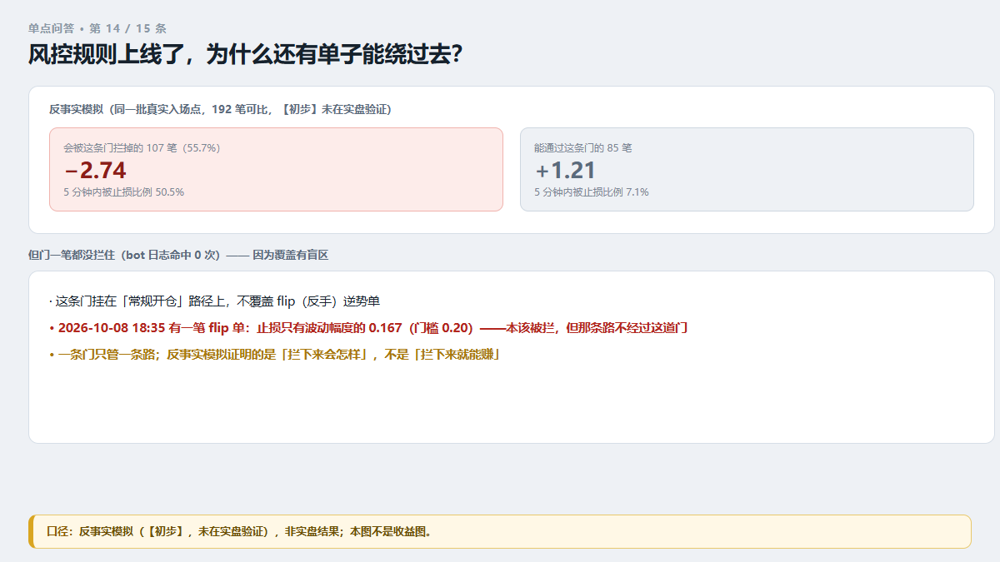
图 14：风控规则上线了，为什么还有单子能绕过去？
我们上线过一条"止损宽度门"：止损宽度不达标的单子，不开。规则写好了，开关也是开的。
但它上线之后，bot 日志里的命中次数是 0——一笔都没拦下来。上线后那段时间只成交了 8 笔，所以"命中 0 次"本身还不能定罪。于是我们去做反事实模拟（同一批真实入场点，192 笔可比）：
- 会被这条门拦掉的 107 笔（55.7%）：期望 −2.74 美元/笔，5 分钟内被止损的比例 50.5%；
- 能通过这条门的 85 笔：期望 +1.21 美元/笔，5 分钟内被止损比例 7.1%。
两组的差别很大。但门一笔都没拦住。
真正的原因是覆盖盲区：这条门挂在常规开仓路径上，不覆盖 flip（反手）逆势单。2026-10-08 18:35 有一笔 flip 单，止损距离只有波动幅度的 0.167（门槛是 0.20）——按规则它本该被拦，但那条路径根本不经过这道门。
所以这里有三句很朴素的话：
- 一条门只管一条路。 你的下单入口有几个？每一个入口都要问一遍"这道门在不在路上"。
- "上线了"不等于"起作用了"。 判据是命中计数 + 反事实模拟，不是"代码里有这行"。
- 反事实模拟不是实盘结果。 上面那些数字是模拟出来的（【初步】，未在实盘验证），它证明的是"如果拦下来会怎样"，不是"拦下来就能赚"。
这篇是「单点问答」里的一条，一条只回答一个疑问，素材全来自我们自己的真实事故。想看同类的，去我们自家站搜「VigilDesk 单点问答」。
风险提示：本文是我们自己工程事故的复盘。数字来自单个真实模拟账户与项目代码静态检查，样本小、周期短，不构成投资建议，不能用于推测未来表现。风控工具只能限制单次亏损范围，无法阻止亏损发生，也无法提高盈利概率。
第 15 问
统计当日亏损时，你的"一天"是从几点算的？
先说结论：换一个日界，同一批成交记录能算出不同的"最差单日"。
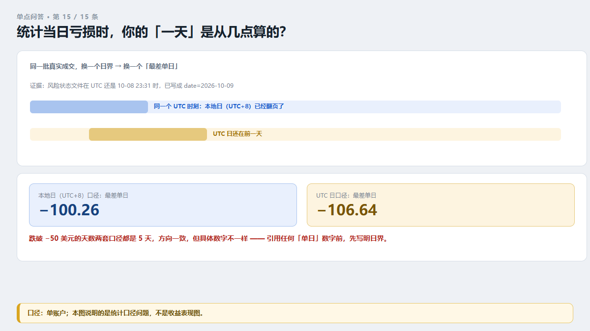
图 15：统计当日亏损时，你的"一天"是从几点算的？
这件事我们吃了两次亏，所以单独写一条。
我们的机器人有自己的"风险日"概念：它用本地日（UTC+8）判断"今天亏了没有"。证据是，风险状态文件在 UTC 还是 10-08 23:31 的时候，已经写成了 date=2026-10-09。
同一批真实成交：
- 本地日口径：最差单日 −100.26 美元；
- UTC 日口径：最差单日 −106.64 美元。
跌破 −50 美元的天数，两套口径都是 5 天——结论方向一致，但具体数字不一样。
为什么这件事重要？三个理由：
- 它会改变你对自己刹车的判断。 你以为的"最差一天"，可能不是最差的那天。
- 它会让复盘和成交记录对不上。 你按自然日汇总，程序按本地日判断，两边的"当天"能差好几个小时。
- 它会让两个分析员得出不同数字。 我们内部就出现过：一个说最差 −100.26，一个说 −106.64——两个都对，因为日界不同，而没人写明口径。
所以规矩只有一句：引用任何"单日"数字前，先写明是哪套日界。
顺带一个同类项：成交时间也有口径问题。 我们的台账里，下单触发时刻比券商实际成交早 0~85 秒（中位 51 秒）；平仓的记录时刻比实际平仓晚 99 秒到 98 分钟。
所以算持有时长、入场时刻、时段的时候，一律以券商成交时间为准——用台账时间会把持有时长算长。
「单点问答」是我们的一个栏目：一条只回答一个问题。想看别的，去我们自家站搜「VigilDesk 单点问答」。
风险提示：本文是我们自己工程事故的复盘。数字来自单个真实模拟账户与项目代码静态检查，样本小、周期短，不构成投资建议，不能用于推测未来表现。风控工具只能限制单次亏损范围，无法阻止亏损发生，也无法提高盈利概率。